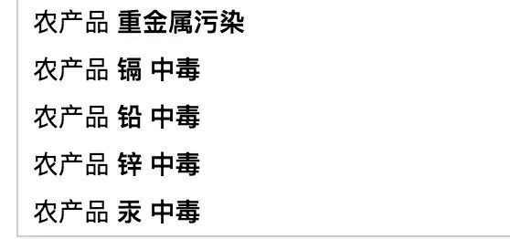

Select information
-
 2018/09/30
2018/09/30NO.1 生态建设 1、与01002 丰瑞祥推进区块链项目合作事宜,将WeShare链区块链技术服务功能清单提供给其客户,并由双方商务进行对接...
-
 2018/09/29
2018/09/29WeShare链发起人仁兄受邀参加全球第一步链改蓝皮书发布会，并签订了中国区块链技术改革联盟行动倡议书
Hot recommendation
-
 2018/08/23
2018/08/23据新华社北京8月21日电 记者近日从商务部国际贸易经济合作研究院获悉，我国将加快区块链技术在商务领域的应用，为发展数字商...
区块链真实落地调查（一）：区块链溯源，能让食品更安全吗？
区块链已被捧至神坛。
被包装得神乎其神的区块链，到底在哪个场景落地了？
一本君将从今日开始，遍访区块链项目，探访实际落地情况，并展望未来。
以下是第一篇，区块链真的能解决食品安全问题？
在币市惊心动魄的时刻，区块链项目的落地，却显得步履蹒跚。
区块链具有不可篡改性，大家设想的第一应用场景，就是：溯源。
在农业市场，区块链正在尝试落地。
食品安全，一直是中国人的心头之痛。
区块链技术真的能让这个难题迎刃而解？
01广阔市场
中国农业是一个巨大的市场。
国家统计局数据显示，2016年，我国农作物总播种面积，达到166650千公顷；农产品流通市场在10万亿左右。
这么大的市场，足够容纳新的技术变革。
另一方面，“民以食为天”，中国本就有吃文化，加上消费升级，消费者对吃的关注度更高，要求也更高。
“现在农产品供应和消费两端，存在严重的信息不对称，一些好的东西，卖不上好价格；想买好产品的人，也找不到好的购买渠道。”WeShare链联合创始人兼COO徐立春认为。
在中国，食品安全问题一直是心头之痛。
媒体频繁曝出食品安全事件，比如轰动全国的“僵尸肉”“镉大米”“毒生姜”“瘦肉精”“地沟油”，不胜枚举。
在百度新闻中搜索“农产品”，智能联想的关键词却是“污染”“中毒”。

如此广博的市场，如此痛的痛点，区块链技术是否能重塑行业？
目前农业领域区块链溯源方式，主要就是在农产品上加一个二维码，一扫描，就能看到这个产品的品种、生产和运输等多个信息。
比如，众安推出的区块链“步步鸡”，消费者扫描二维码后，就能看到这只鸡的产地、什么时候入栏，什么时候出栏，走了多少步，活动轨迹等。
“这些数据一部分是人工上传，一部分是通过物联网技术采集。”众安科技对一本区块链表示。
另一方面，区块链还有不可篡改的特性，数据一旦上链，就没法更改。
“区块链本身是解决多方参与时，大家的信任问题。”徐立春称。
目前，“区块链+农业”已成为一个期望较高的区块链落地领域。
除了众安的“步步鸡”和WeShare链之外，上市公司北大荒近期也宣布，“第一批区块链认证大米”已在京东销售。
而零售巨头阿里、京东、沃尔玛，也纷纷宣布，将把区块链技术，嫁接到食品安全领域。
一场在农业产业链领域的技术改造轰轰烈烈展开，它能彻底解决农产品安全的痛点吗？
02技术边界
在目前狂热的氛围下，部分人已将区块链技术捧上神坛，以为去中心化能颠覆一切。
但实际上，在农业这个传统的领域，区块链的落地也有很多掣肘。
“区块链只是在做数据存储、加密、路由、转发的过程，但数据采集、感知，需要人力、物联网设备，这是需要花钱的。”徐立春解释。
△WeShare链溯源系统数据收集流程
这意味着，除了搭建区块链平台外，在数据采集阶段，需要不菲的资金投入。
更关键的是，区块链技术落地，有时需要用户的理解和配合。
“如果用户没有意识到区块链能帮他带来农产品品质、附加值的提升，他是很难接受的。”徐立春表示，“尤其是农民，多花一分钱，他可能要问十个问题。”
因此，在项目早期，区块链技术的实际价值，还没能超越“噱头”。
另一方面，解决食品安全问题，也需要考虑不同“场景”。
比如，居民会关注附近菜市场的食品安全，工作人员讲究外卖的安全，学生会考虑食堂食品安全，这些全都依托在某个具体场景中。
“如果不考虑场景，只想做大而全，将会面临成本过大问题。”徐立春认为。
最关键的是，“假货”问题，并不能单凭区块链技术来根本解决的。
比如很多大的连锁超市，它借助区块链溯源技术，本质目的不是为了“食品安全”，而是为了管理货物。
所以他们选择的区块链记账节点，大都是大的生产机构和供应商。
他们是一个利益共同体，只在乎“多卖多赚”，甚至有可能，他们会联合起来数据造假。
这就是区块链落地现实的最大掣肘：你能保证上传的数据，绝对不会被篡改；但你不能保证，上传的数据是真的。
这意味着，消费者最关心的食品安全问题，不能从本质上得到解决。
另一方面，区块链怎么证明“你就是你”的问题。
比如，一瓶名牌葡萄酒，扫码后区块链上显示是真实品牌，但你怎么证明，瓶子里的酒没被换过？
“区块链不能够解决问题，只能改善。”徐立春称，区块链技术的进入，让造假的成本更高了。
以前造假，只需要腐蚀一个中心记账“节点”，比如，采购人员。
而现在，需要打通所有节点，造假成本提高。
最后，和其他领域的区块链项目一样，“区块链+农业”也存在各种炒作、泡沫问题。
“2018年涌入很多做区块链溯源的公司。”徐立春说，也有不少选择了农业作为技术落地突破口。
“之前我们会在官网上发一些项目进展消息，现在都撤掉了。”徐立春称，“因为会被有些团队，直接拿去自用。”
炒作和掣肘下，应该如何摆正区块链在农业领域的位置？
03销售关键
除了区块链，就没有其他能解决食品安全的办法吗？
“不是没有其他办法，而是人愿不愿意去做。”徐立春解释。
农产品的供应链是一个非常复杂的过程，涉及多方，农业局、卫生局、药监局、工商局、环保局等多个部门交织其中，“仅靠传统的制度或处罚措施，很很难让这个环境变得干净。”徐立春称。
如此看来，目前，区块链技术是最好的办法了。
但同时，有个观点需要明确，区块链不能解决农产品流通、食品安全的问题，只能是“改善”。
“与其说区块链技术是‘颠覆’，不如说是‘升级’。”徐立春认为。
对于农民来说，你和他提区块链，他们压根不会搭理你，但是你说能帮助他们提高农产品的销售，那估计就会两眼放光。
“在扶贫的时候，你说区块链，他们并不认可；但你跟他说，以前买10块钱的，现在加了这个技术，能买到20多，还能提高销量，他们就说‘来吧来吧’。”徐立春称。
所以WeShare链有了一个创新，他们在溯源的基础上，搭建一个新零售流通平台，帮助农民销售农产品。
因此，这个“区块链+农业”的体系，需要负责数据的真实性，也要负责产品的销售——既做溯源，又做电商。
如此，才能将技术落地现实。
“目前，区块链技术不是婴儿时期，而是更早期的孕育时期。”徐立春认为，农业市场巨大，多家企业进入，可以共同教育市场。
在炒作、泡沫盛行的当下，更需要冷静踏实的声音。
— 转自一本财经
文 | 墨菲
上一篇: WeShare链开拓溯源产品销售新通路
下一篇: WeShare链溯源系统应用持续落地中